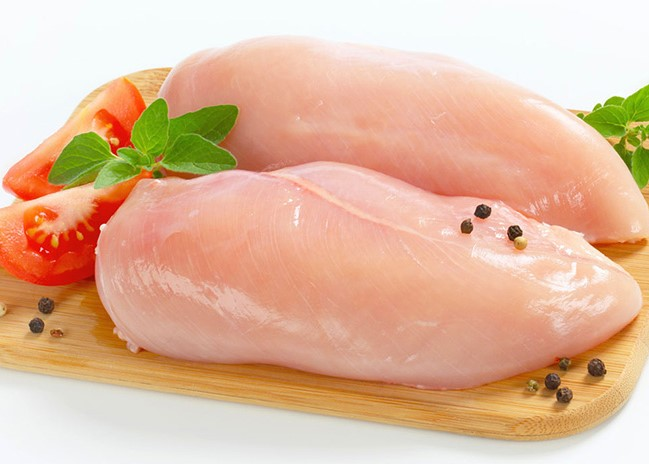
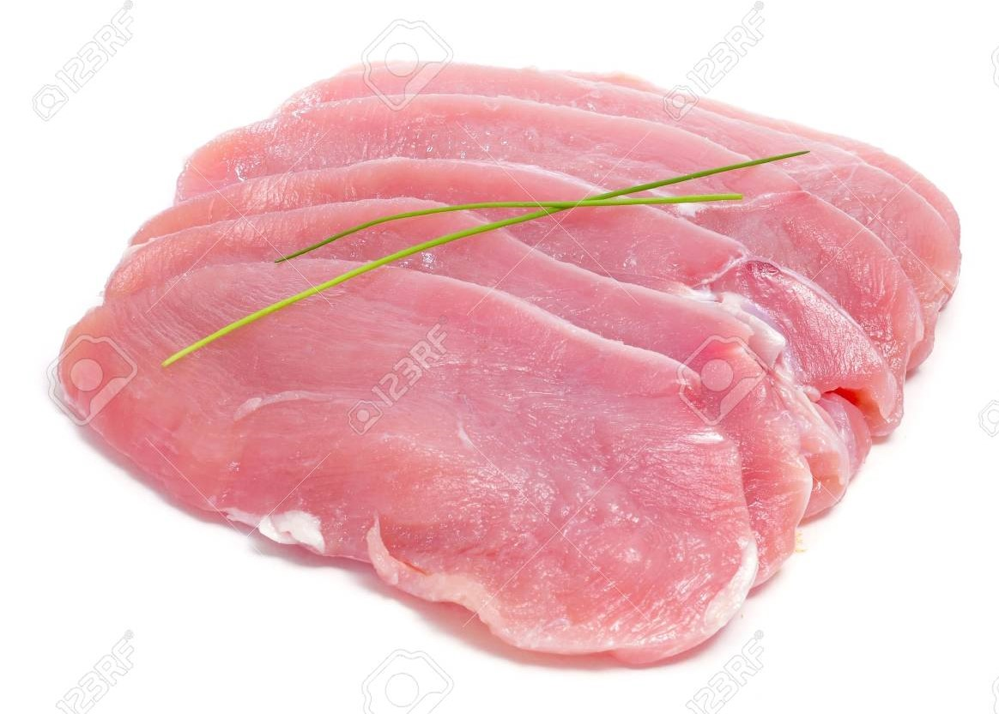

FRESH, SAFE QUALITY MEATS
"Meat, the flesh or other edible parts of animals (usually domesticated cattle, swine, and sheep) used for food, including not only the muscles and fat but also the tendons and ligaments."
"Meat is valued as a complete protein food containing all the amino acids necessary for the human body. The fat of meat, which varies widely with the species, quality, and cut, is a valuable source of energy and also influences the flavour, juiciness, and tenderness of the lean. Parts such as livers, kidneys, hearts, and other portions are excellent sources of vitamins and of essential minerals, easily assimilated by the human system".
Though you may have heard it called “the other white meat,” pork is considered red meat. It is a good source of certain nutrients, as well as high-quality protein. Consumed in moderation, it can make a good addition to a healthy diet.
Pork is also a good source of vitamins and minerals like phosphorus, selenium, and thiamine. Pork is actually richer in thiamine, a B vitamin required for a range of bodily functions, than other red meats like beef and lamb. Vitamins B6 and B12, also found abundantly in pork, are essential for blood cell formation and brain function.
Beef is a rich source of high-quality protein and various vitamins and minerals. As such, it can be an excellent component of a healthy diet.
Chicken makes a fantastic substitute for red meats. A great source of protein, the meat has been linked to a variety of health benefits.
Chicken is filled with high-quality proteins and doesn’t contain much fat — especially if you eat lean cuts. Beyond its rich protein content, chicken also contains Vitamin B12, Tryptophan, Choline, Zinc, Iron, Copper
Duck meat is extremely flavorful and nutrient dense. It's an excellent source of protein and healthy fat as well as micronutrients including selenium, iron, and niacin.
Turkey is a very rich source of protein, niacin, vitamin B6 and the amino acid tryptothan. Apart from these nutrients, it is also contains zinc and vitamin B12. The skinless white meat of turkey is low on fat and is an excellent source of high protein. Turkey also contains anti-cancer properties.